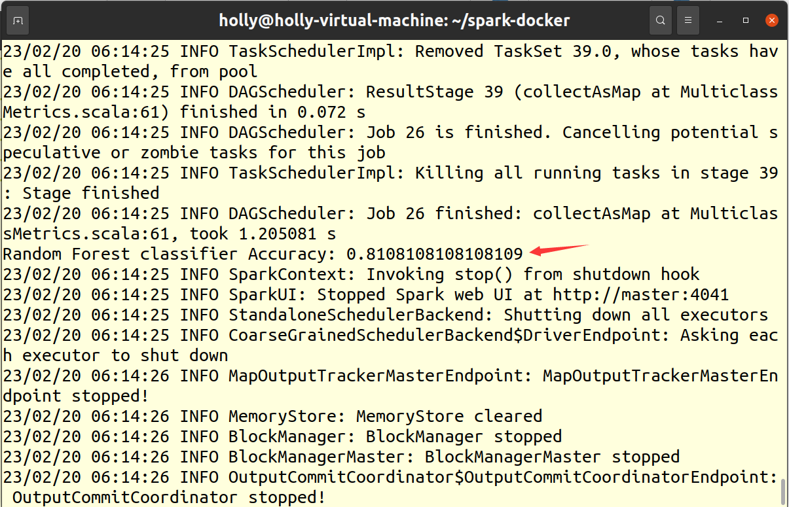
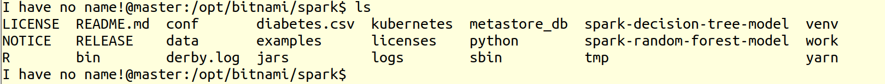

集群上执行机器学习任务
一、环境准备
安装numpy、pandas
二、提交 Python 应用
2.1. 代码
from pyspark.sql import SparkSession
spark = SparkSession.builder.appName('ml-diabetes').getOrCreate()
df = spark.read.csv('diabetes.csv', header = True, inferSchema = True)
df.printSchema()
import pandas as pd
pd.DataFrame(df.take(5),
columns=df.columns).transpose()
df.toPandas()
df.groupby('Outcome').count().toPandas()
numeric_features = [t[0] for t in df.dtypes if t[1] == 'int']
df.select(numeric_features)\
.describe()\
.toPandas()\
.transpose()
from pyspark.sql.functions import isnull, when, count, col
df.select([count(when(isnull(c), c)).alias(c)
for c in df.columns]).show()
dataset = df.drop('SkinThickness')
dataset = df.drop('Insulin')
dataset = df.drop('DiabetesPedigreeFunction')
dataset = df.drop('Pregnancies')
dataset.show()
# 用VectorAssembler合并所有特性
required_features = ['Glucose',
'BloodPressure',
'BMI',
'Age']
from pyspark.ml.feature import VectorAssembler
assembler = VectorAssembler(
inputCols=required_features,
outputCol='features')
transformed_data = assembler.transform(dataset)
transformed_data.show()
(training_data, test_data) = transformed_data.randomSplit([0.8,0.2], seed =2020)
print("训练数据集总数: " + str(training_data.count()))
print("测试数据集总数: " + str(test_data.count()))
from pyspark.ml.classification import RandomForestClassifier
rf = RandomForestClassifier(labelCol='Outcome',
featuresCol='features',
maxDepth=5)
model = rf.fit(training_data)
rf_predictions = model.transform(test_data)
from pyspark.ml.evaluation import MulticlassClassificationEvaluator
multi_evaluator = MulticlassClassificationEvaluator(
labelCol = 'Outcome', metricName = 'accuracy')
print('Random Forest classifier Accuracy:', multi_evaluator.evaluate(rf_predictions))
model.write().overwrite().save("./spark-random-forest-model")
2.2 使用 spark-submit 命令提交 Python 脚本
指定 --master 参数提交到集群上。如果未指定该参数，则默认以本地模式运行。
spark-submit --master spark://master:7077 /opt/share/ml.py
2.3. 运行结果

保存模型
